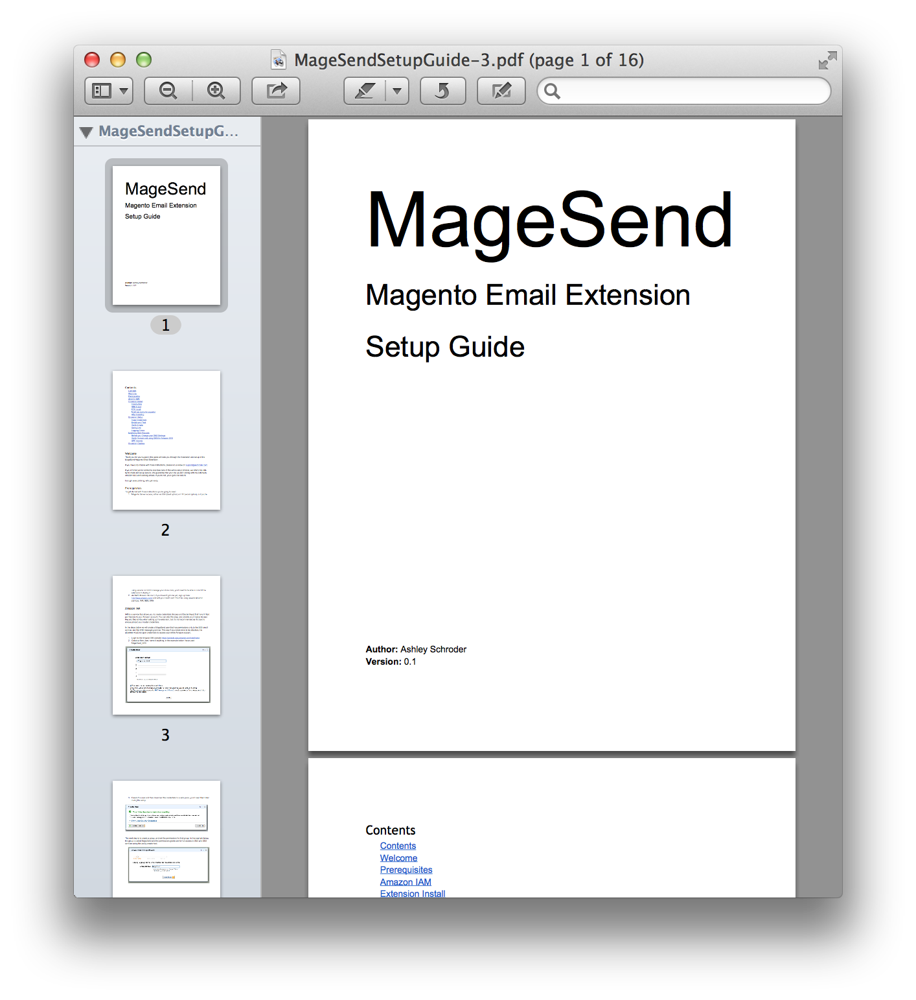

I spent considerable effort writing the user guide for MageSend and have been happy with the results. I think of a well written user guide as the fence-at-the-top-of-the-cliff that prevents the support email burden ambulance-at-the-bottom. It’s been a source of fairly regular positive feedback from customers, so I wanted to share how I created it, and how I ensure it’s seamlessly integrated with the packaging process by build script. In this post I will run through how I use Google Docs as a documentation tool for my premium MageSend email extension, and take advantage of the publish URLs in build scripts to ensure the latest version of the User Guide is packaged in both PDF and HTML format with each release. I will say I only have one premium extension (currently) and am relatively new to this game, so it’s entirely possible there’s much better ways to do this, in fact if someone has some better suggestions I’d love to hear them!

Writing Software Documentation in Google Docs
In order to even go down this route you have to be comfortable using Google Docs for writing technical documentation. I’ve been using Google Docs for as long as I can remember, when weighing options like markdown, plain-html or Latex I had no hesitation with Google and understood the limitations, and advantages of Goole Docs, summarised below.
- + Collaborative editing, e.g graphics designers can add logos and screenshots into the same document as you edit the words
- + Always saved, revision history available for change tracking
- + Simple UI for editing documents, provided you keep your style very simple.
- – You have to get into bed with Google – it’s not a complete lock-in though, you can export plain (but ugly) HTML.
- – Annoying export bug with published docs table of contents linking to the web version.
So it’s a simple, easy to use document editing tool, with a number of modern features for collaboration and exporting, but a few annoying bugs, and slight pangs of vendor lock-in.
Publishing your Google Doc
The UI for Google Docs is in a constant state of flux, as of writing this the publish dialog looks like this:
It’s actually missing all the various export options in the UI (they used to be there) but thankfully all the URL’s still work so it’s easy to create them based on the normal published URL. Take your publish URL which should look like this:
https://docs.google.com/document/d/jkfalebflszkebflzsbfljzs/pub |
And simply add this fragment /export?format=pdf instead of /pub at the end of the URL. Like this for pdf, and obviously use html not pdf for the html export:
https://docs.google.com/document/d/jkfalebflszkebflzsbfljzs/export?format=pdf |
You can test these work by accessing them from the command-line with curl like so:
curl "https://docs.google.com/document/d/jkfalebflszkebflzsbfljzs/export?format=pdf" > Your-Setup-Guide.pdf |
Scripting your Google Doc into release packages
So, given the published export format URLs, it should be fairly easy to see how this can then be used in your build/package scripts.
In my own script I create a code.zip file that is the zipped up contents of the extension, which will expand into the correct locations in the Magento base directory. I then package up the code.zip, along with the .pdf and .html versions of the user guide docs into a release package zip that includes the README and release notes.
The good thing about these URLs is they can be used easily from bash scripts, ant scripts or even ruby-flavor-of-the-month build tool scripts. It’s a flexible approach to automatically including the latest docs in every release.
And that’s it, now you have a simple online documentation, that will automatically be fetched and added to your release package every time you generate a new release. I think another area of possible improvement for release packaging would be to pull a list of the closed issues from Github for the given release milestone, so that your release notes are also automatically updated during the release process.
I also noticed Kimberly (@magentogirl) asking about Magento Connect compatible packages, it would be a worthwhile addition to script creating those for premium extensions too. If other extension developers have better/different approaches to this whole aspect of extension management, I’d really like to hear them!
Excellent post Ashley! Nice to be back here again reading your articles.
That’s so simple and so great!
Whole Google Doc is a real treasury for those who looking to automate collaborative task like this.
Thanks for sharing this. Ashley, do you maybe have a quick hint where to start on making the same with private access docs through command line? I mean curl/wget + google authorize or something like that.
Thanks,
Rob